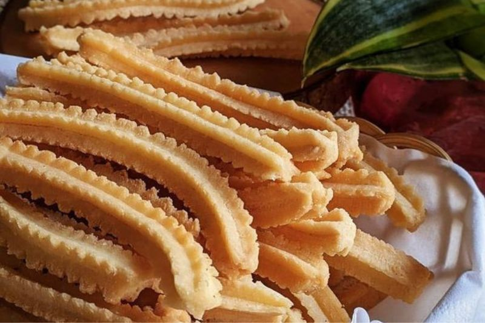
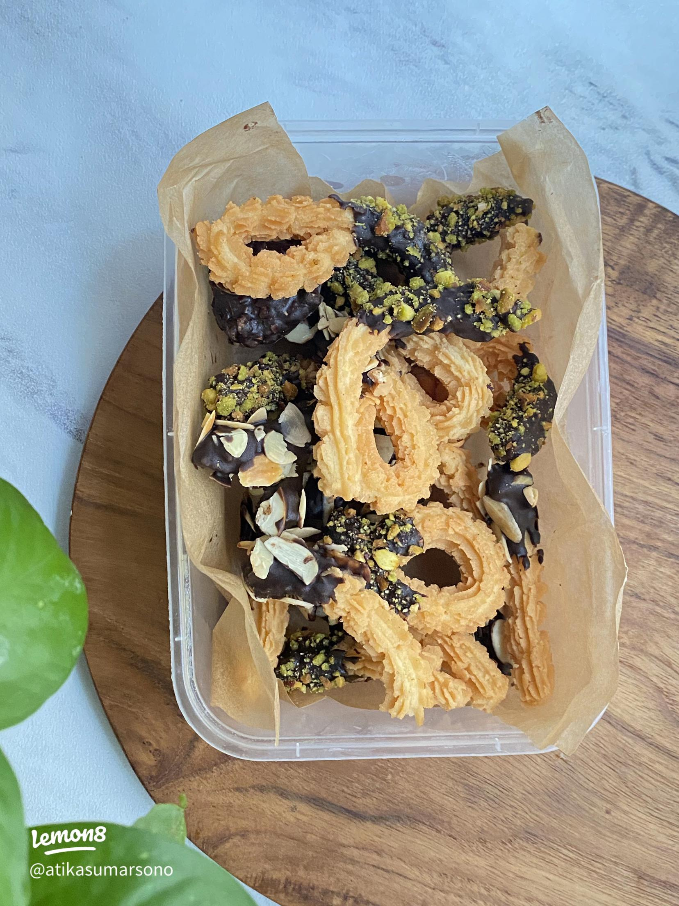

Info Produk
✦ Detail & Pemesanan ✦
✦ Detail & Pemesanan ✦
Homemade · Premium · Tradisional

Kue tradisional berbahan dasar kelapa pilihan berkualitas tinggi dengan sentuhan kayu manis yang harum dan khas. Teksturnya renyah di luar, gurih di dalam — cocok untuk camilan keluarga maupun oleh-oleh spesial. Dibuat secara homemade tanpa bahan pengawet.

Inovasi terbaru kue akar kelapa kami — dicelup coklat premium berkualitas tinggi. Perpaduan renyah gurih dari akar kelapa dengan lembut manis coklat yang bikin ketagihan. Cocok untuk hadiah & snack kekinian!
Hubungi kami langsung via WhatsApp untuk info lebih lanjut dan pemesanan!
 Chat WhatsApp
Chat WhatsApp